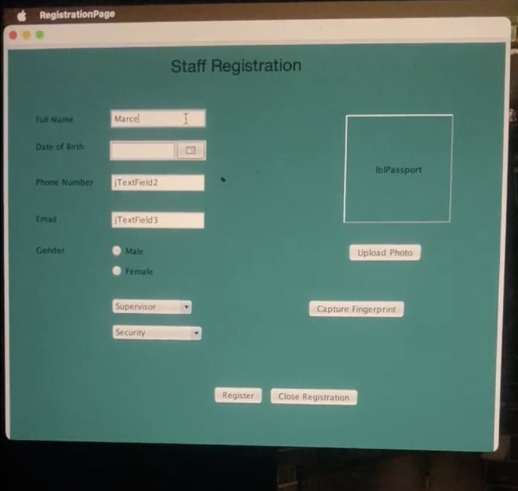
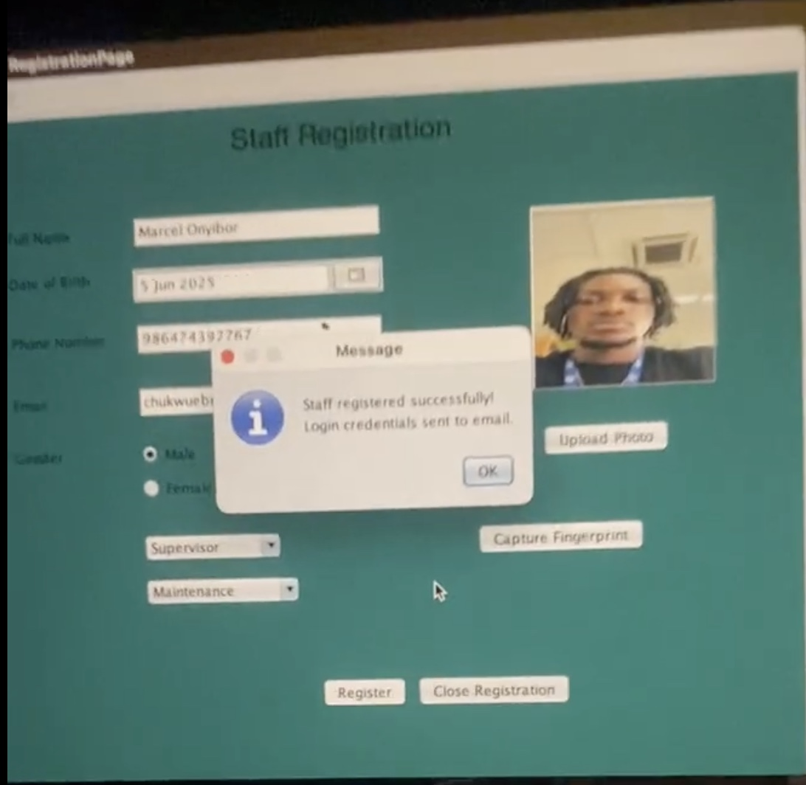
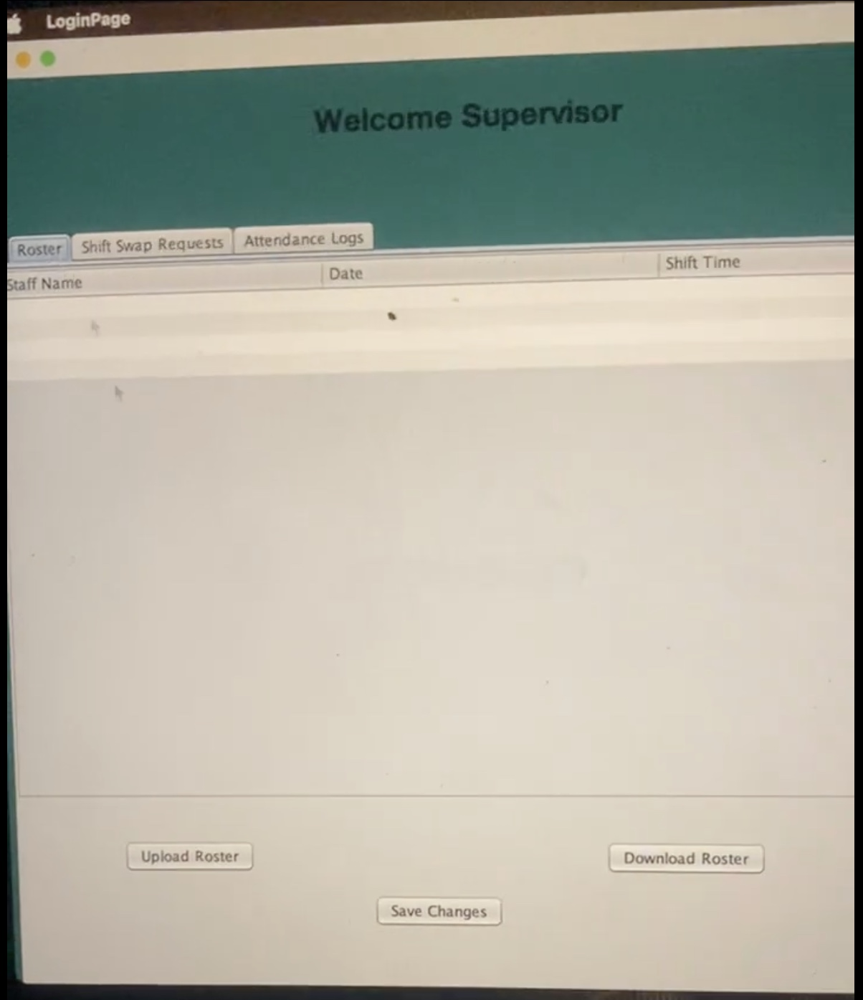
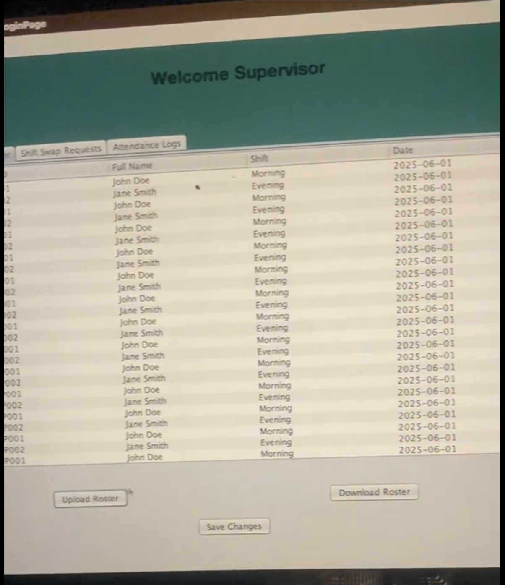
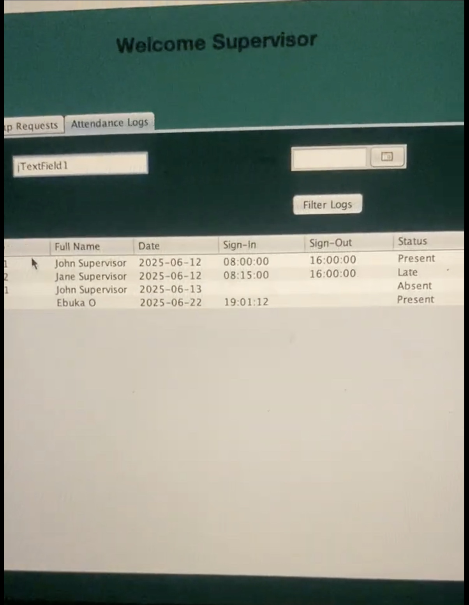
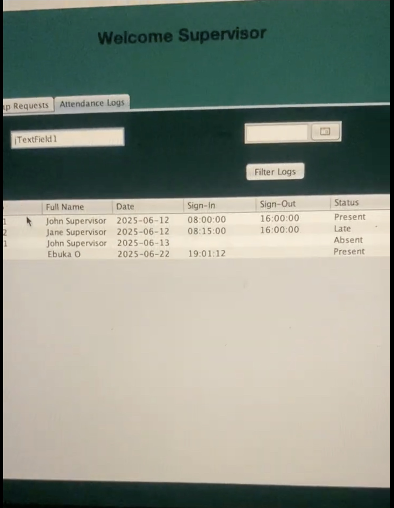

Attendance Shift Management System
    

Full Description
The Attendance Shift Management System aims to enhance internal operations by automating the attendance and shift managment system for support staff, which includes Security, Horticulture, Facility, Cafeteria, and Maintenance Units. It is a biometric-based sign-in system that improves accountability, streamlines attendance monitoring, and supports shift planning.
Problem Solved
The Attendance Shift Management System was developed to address critical operational inefficiencies in tracking and managing support staff across five units: Security, Horticulture, Facility, Cafeteria, and Maintenance. Here are some of the inefficiencies it addressed:
Eliminated Manual & Error-Prone Attendance Tracking
Problem: Manual attendance logs were inaccurate, prone to human error, and difficult to verify.
Solution: Automated biometric (fingerprint) sign-in/sign-out with timestamps and email confirmations.
Streamlined Shift Management & Accountability
Problem: Inefficient manual scheduling, unclear shift assignments, and poor shift swap processes.
Solution: Digital rosters uploaded by supervisors, automated shift assignment emails, and a structured shift swap request/approval workflow.
Improved Security & Access Control
Problem: No role-based access; sensitive staff data and management functions were not properly secured.
Solution: Multi-level user roles (Supervisor, Non-Supervisor, IT Admin, Director) with strict permissions and encrypted password storage.
Standardized Unit-Specific Shift Schedules
Problem: Inconsistent shift timing across different units caused confusion.
Solution: Defined shift schedules per unit (Maintenance, Cafeteria, Security, Facility, Horticulture) with clear time boundaries.
Simplified Administrative Tasks
Problem: IT administrators burdened with manual password resets, account management, and data entry.
Solution: Automated password generation/reset, bulk roster uploads, and centralized user management interface.
Features
- User Registration & Authentication
- Role-Based Access Control
- Shift Management
- Attendance Tracking
- Reporting & Analytics
Technologies Used
What I Learned
This project exposed me to new knowledge and practices of how to automate a manual system while utilizing databases to record and store data.